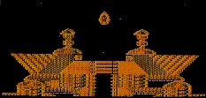
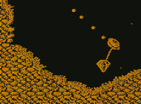
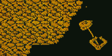

SAY BWAH!! - CRASH, March 1991
By Richard Eddy

He's back... to protect the innocent? No, no, that's not right. Erm... The man with the pac is back? Not bad. He's a hero in a half-shell? More like a half-hero out of his nut shell.
Oh, hello viewers. How do you announce that the universe's biggest loony-turned-adventurer is about to star in his third Speccy game? Yes, Jetman bumbles onto the Speccy gaming scene in April in a brand new arcade game called Solar Jetman: Hunt For the Golden Warpship! Yayy!
It's been a fair old while since Jetman last appeared on the Speccy. It must be (oooh!) getting on for about seven years. The last game was Lunar Jetman and that was way back in 1983! If you hold on a tick I'll pop off to the attic and see what can be discovered... (tick).
Cough! Splutter! Hack hack! Sheesh, it's bloomin' dusty up there but here it is! Yup, an Issue one - Issue one!! - of CRASH, and there lurking on page 88 is Lunar Jetman: the review. Well, it appears ye olde reviewers liked it heaps.
Check this out: 99% graphics rating!! 100% Value For Money! And an overall score of 95%! Berlimey, it would have been the first CRASH Smash (except they weren't invented until Issue four!).
So, what the blinking-flip has the Loon been up to for the past seven years? Well, apart from his monthly foray into unknown silliness in the CRASH cartoon strip, he's been at home with his creators at the games development house of Rare (publishers of the acclaimed Ultimate label), where they stuck him on the Nintendo console! And that's where Solar Jetman originates from.
Solar Jetman, on the Nintendo, has just appeared and is doing wonderfully, so it only seemed right for some lucky software house to snap up the conversion rights and bung it on the Speccy (which is, after all, Jetman's real home, since that's where he began life in his first game, Jetpac), And the house with its name on the game is Storm! So, what say we pay them a visit and check out the game? Hokay?

Hence the Title!
The game: Jetman bombs around a solar system of 12 planets hunting for bits of the fabled Golden Warpship. Why's he doing this? Knowing Jetman, he's after making a quick buck. Y'see, should he find all the bits of the Warpship and glue 'em back together, it'll make him fabulously wealthy so he can retire and never have to worry about Teenage Mutant Headbanging Budgies and the Eye of Oktup ever again.
Solar Jetman gives our hero a new toy to play with: a Jetpod. It's like a mini-space ship which he launches into an unknown solar system from his mother ship. He's still got his Jetpac, too. There's one piece of the Warpship on each of the 12 planets, but exactly where it is is anyone's guess: So off we go!
Solar Jetman's gameplay may be familiar to you - it's a bit like the old Gravitar arcade machines or the Firebird game, Thrust. You don't know 'em? Oh dear. It's a bit like this, really: The planet's dangerously hilly landscape is viewed side-on and scrolls multi-directionally. Then you've got your ship, in this case the Jetpod, which you have to guide safely over hills and valleys while picking up objects from the planet's surface and deep caverns.
Sounds easy, eh? That's because I haven't mentioned the gravity. Gravity's this wonderful thing which makes things fall. Oh, you knew that. Each planet has its own gravitational force so if you're not using the Jetpod's back thrusters it'll just go plop into the landscape.
Controlling the Jetpod can be a tricky business: it can be spun clockwise or anti-clockwise until it's facing the direction you want to travel. Then engage the rear thrusters to accelerate. But woah, what's this?! There ain't no brakes on this doo-hickey ship! Yeeek! The Jetpod's inertia keeps it moving until you spin in another direction and thrust off! Bump into the rocky walls and the Jetpod crashes, leaving Jetman out and about with only his suit and Jetpac to protect him! Head back to the mother ship to pick up another one of the three available Jetpods because if Jetman collides with the walls, it's certain death!

Jetman Goes Shopping
As if keeping control of the ship isn't enough hassle, don't forget Jetman has to collect things from each planet's surface and the underground cavern mazes. Jetman lowers a grappling hook from the pod which grabs an object. The object then has to be flown safely back to the mothership.
All the goodies are worth money and can be cashed in at Interstella shops. Conveniently, the shops also sell loads of bolt-ons to make the Jetpod super powered! On offer are momentum killers (which stops the inertia), gravity killers (keeps the pod afloat), shields and super shields (to protect the pod from the hazardous walls), maps (so you know where you're going) and an impressive range of armoury.
There are hordes of beasts which can wreck Jetman's quest and each planet boasts a range of gun emplacements. A bit of nifty trigger work on the both the pod's laser cannon and the special weapons key is required!
Solar Jetman is a very, very, very big game so mapping each planet is essential. So, it looks like it's going to be a bit of a toughie to play. But, what's it like to program?
Let's ask the man in the know, Speccy programmer Tony Williams: 'It's a damn difficult game to convert from the Nintendo to the Spectrum. It's all the movement: there's the landscape's scrolling, the pod's movement, the aliens' movement, not to mention weaponry flying all over the place; it's tricky to keep the speed up. Because there's so much going on in the game, it'll be 128K only. The project was started with a 48K game in mind but it wouldn't have done it justice. Even with 128K to play with, there'll be a few multi-loads!'
And the final word has to go to the man himself. What do you reckon to all this fuss, then, Jettie?
'Hoh! Wha' me? Wo! I yam Jetman, hero of this here game an' I get my ol' bang-stick and yam goin blast them aliens till they go 'Ack!' and 'Bwah!'. Hoh? I yam on the cover? Fwee! I yam a star! L'kout planet Earth!!!'
Ahem. Yes, very good. As I said, Solar Jetman: Hunt for the Golden Warpship out in April from Storm Software.